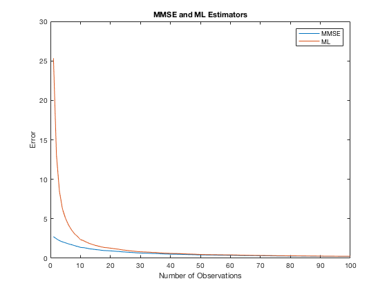
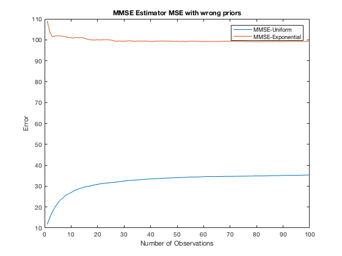
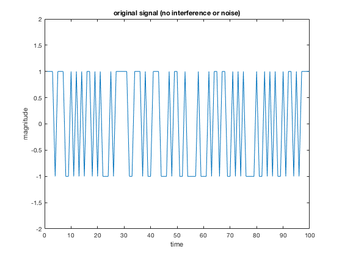
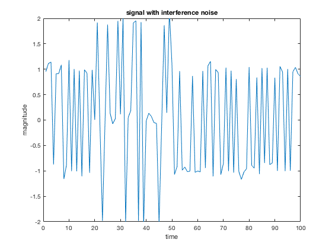
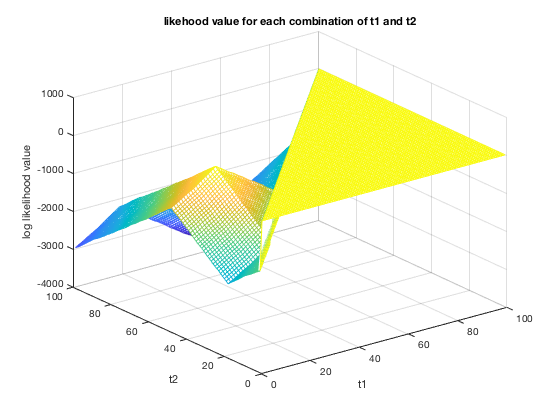

Contents
% Stoch Project II % Weizhe Guo, Liao Hu, and Jing Jiang
Scenario 1
% System: x = h * theta + v % Where v is Gaussian with zero-mean, and variance ?^2, and h is a known parameter. % Let h = .5 for this exercise. num_iter = 1000; % Number of iterations num_obs = 100; % Number of observations h = 0.5; % This is the h as stated in Scenario 1 mu_theta = 10; % Mean of Theta var_theta = 3; % Variance of Theta var_noise = 6; % Variance of the Noise true_theta=normrnd(mu_theta,sqrt(var_theta),[1,num_iter]); % true value of theta v_all = normrnd(0,sqrt(var_noise),[num_obs,num_iter]); % a matrix for all v values for each observation and iteration % c) % pre-allocate memory MMSE_est = zeros(num_iter,num_obs); MMSE = zeros(1,num_obs); for n=1:num_obs % Loop through every observation x = v_all(1:n,:)+h*true_theta; %dim:n*iter_N, each column is one iteration [MMSE_est(:,n),MMSE(n)] = calculate_MMSE_params(true_theta, h, x, var_theta, var_noise, mu_theta); end % for ML ML_est = zeros(num_iter,num_obs); ML_err = zeros(1,num_obs); for n=1:num_obs x = v_all(1:n,:)+h*true_theta; temp = mean(x, 1)/h; ML_est(:,n) = temp; ML_err(n) = mean((temp - true_theta).^2); end % d) Plotting MSE for theta in different distribution % Initialize new dist theta_uni = 10*rand([1,num_iter]); mu_uni = 1/2*10; var_uni = 1/12*10^2; % recalculate the mu and var value for uniform theta mu_exp = mu_theta; var_exp = mu_exp^2; % for exp distribution, variance is square of its mean theta_exp = exprnd(mu_exp,[1,num_iter]); % pre-allocation MMSE_est_uni=zeros(num_iter,num_obs); MMSE_uni=zeros(1,num_obs); MMSE_est_exp=zeros(num_iter,num_obs); MMSE_exp=zeros(1,num_obs); for n=1:num_obs x = v_all(1:n,:)+h*true_theta; [MMSE_est_uni(:,n),MMSE_uni(n)]=calculate_MMSE_params(theta_uni, h, x, var_uni, var_noise, mu_uni); [MMSE_est_exp(:,n),MMSE_exp(n)]=calculate_MMSE_params(theta_exp, h, x, var_exp, var_noise, mu_exp); end % Plot all results figure(); plot(1:1:num_obs,MMSE); hold on plot(1:1:num_obs,ML_err); title("MMSE and ML Estimators") legend("MMSE", "ML"); xlabel('Number of Observations') ylabel('Error') figure(); plot(1:1:num_obs,MMSE_uni); hold on plot(1:1:num_obs,MMSE_exp); title("MMSE Estimator MSE with wrong priors") legend("MMSE-Uniform","MMSE-Exponential"); xlabel('Number of Observations') ylabel('Error') 
The performance of ML and MMSE estimators are very close with high number of observations as they both converge to a small error. With wrong priors, however, the error is much bigger, as shown in the plot.
Scenario 2
a) creating original signal signal is either 1 or -1 if no interference
original_sig = randi(2,[1,100]); % suppose the length is 100 original_sig(original_sig==2) = -1; figure plot(original_sig) title('original signal (no interference or noise)') ylim([-2,2]) xlabel('time') ylabel('magnitude') % creating interference interference = zeros(1,100); % interference is in phase interference(20:49) = original_sig(1:30); % suppose interference is from 20 to 50 % Signal with interference y = original_sig + interference; figure plot(y) title('signal with interference') ylim([-2,2]) xlabel('time') ylabel('magnitude') % creating noise % the max amplitude is set to be 0.1 yNoisy = y + 0.1*randn(size(y)); figure plot(yNoisy) title('signal with interference noise') ylim([-2,2]) xlabel('time') ylabel('magnitude') % b) % pre-allocate the matrix prob_matrix = zeros(100,100); pfinal_prev = -inf; for t1 = 1:100 for t2 = t1+1:100 % half chance of being 1 or -1 from the beginning to t1 p1 = sum(log(0.5*normpdf(yNoisy(1:t1),-1,0.1)+0.5*normpdf(yNoisy(1:t1),1,0.1))); % half chance of being 0 and 1/4 chance of being -2 or 2 in the % range from t1 to t2 p2 = sum(log(0.25*normpdf(yNoisy(t1+1:t2),-2,0.1)+0.5*normpdf(yNoisy(t1+1:t2),0,0.1)+0.25*normpdf(yNoisy(t1+1:t2),2,0.1))); % half chance of being 1 or -1 from t2 to the end p3 = sum(log(0.5*normpdf(yNoisy(t2+1:end),-1,0.1)+0.5*normpdf(yNoisy(t2+1:end),1,0.1))); pfinal = p1 + p2 + p3; prob_matrix(t2,t1) = pfinal; % find the max likelihood value; updating the value if it is % greater than its previous likelihood value if pfinal > pfinal_prev pfinal_prev = pfinal; t1_est = t1; t2_est = t2; end end end sprintf('The estimate of t1 is %d', t1_est) sprintf('The estimate of t2 is %d', t2_est) %c) figure [t1,t2] = meshgrid(1:1:100); mesh(t1,t2,prob_matrix); title('likehood value for each combination of t1 and t2') xlabel('t1') ylabel('t2') zlabel('log likelihood value')
ans =
'The estimate of t1 is 19'
ans =
'The estimate of t2 is 49'
   The log likelihood is shown in the 3d plot. And the max likelihood is the peak of the surface. The ML is very accurate as it is very close to our true value t1 = 20 and t2 = 50
Scenario 3
data=load("./data.mat"); obs=data.data; % calculation for exponential distribution n = size(obs, 2); ML_exp_est = 1/mean(obs); ML_exp_err = n*log(ML_exp_est)-sum(ML_exp_est*obs); % calculation for rayleigh distribution ML_ray_est = sqrt(sum(obs.^2)/2/n); ML_ray_err = sum(log(obs))-2*n*log(ML_ray_est)-sum(obs.^2)/2/ML_ray_est^2; sprintf('The ML estimate of exponential distribution is %d, log likelihood is %d', ML_exp_est, ML_exp_err) sprintf('The ML estimate of rayleigh distribution is %d, log likelihood is %d', ML_ray_est, ML_ray_err)
ans =
'The ML estimate of exponential distribution is 7.794844e+00, log likelihood is 1.053462e+03'
ans =
'The ML estimate of rayleigh distribution is 1.016097e-01, log likelihood is 1.365516e+03'
Rayleigh distribution has a higher max likelihood and thus is more likely to be the distribution
applied functions
function [estimation, error] = calculate_MMSE_params(true_theta, h, x, var_theta, var_noise, mu_theta) n = size(x,1); %n is # of measuremnts mu_x = h*mu_theta+0; % v is drawn from zero-mean dist matrix_a=eye(n)*(h^2*var_theta+var_noise)+(ones(n)-eye(n)).*h^2*var_theta; % According to expansion result, diagonal terms are % h^2*var_theta+var_noise, whereas other terms in the matrix are h^2*var_theta E_x_theta=h*ones(n,1).*var_theta; % Similarly, E_x_theta can be represented as shown estimation=(inv(matrix_a)*E_x_theta).'*(x-mu_x)+mu_theta; %estimation, one value for each iteration. dim:iter_N*1 error=mean((estimation-true_theta).^2); %Scalar, mean across all iterations end